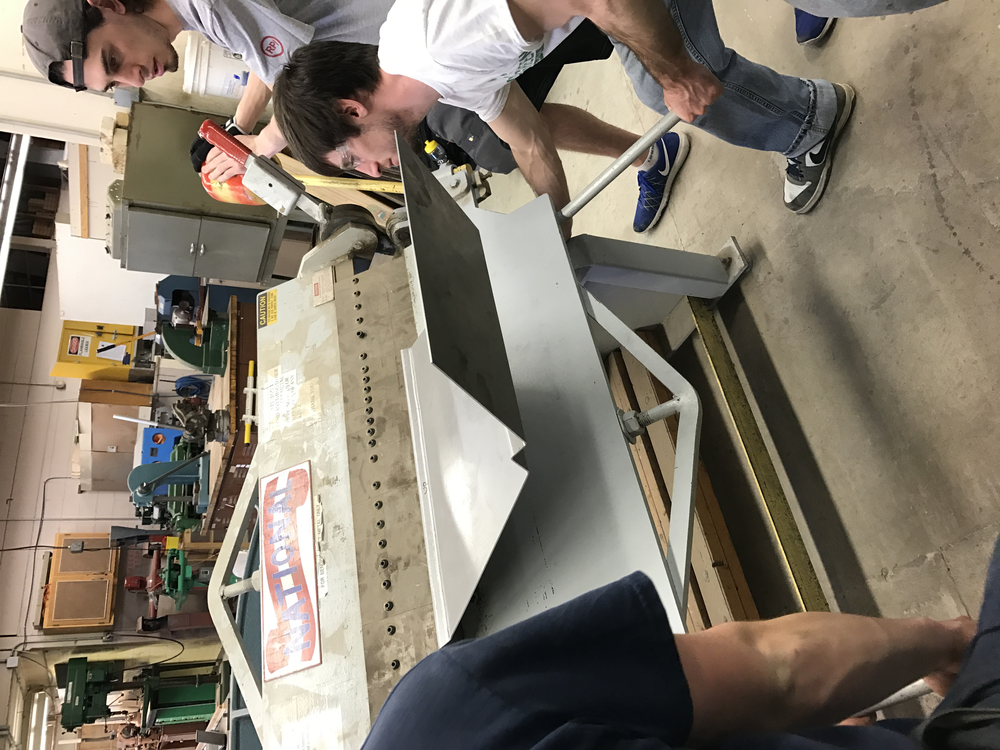
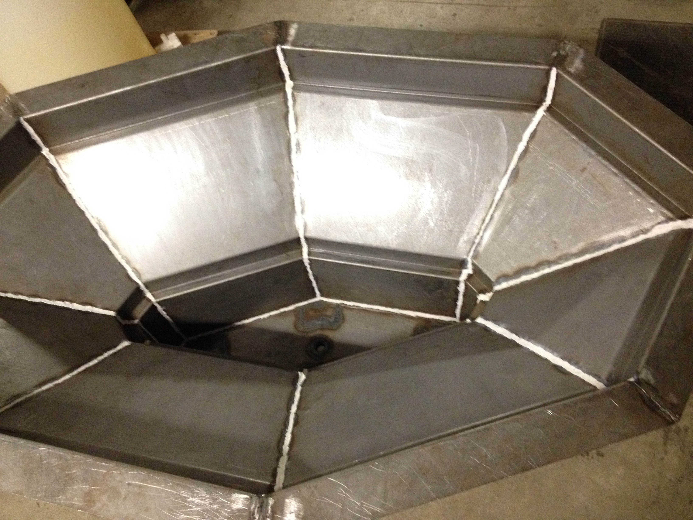
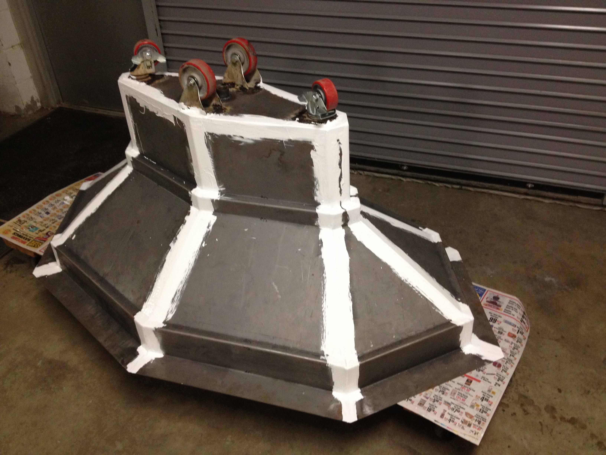
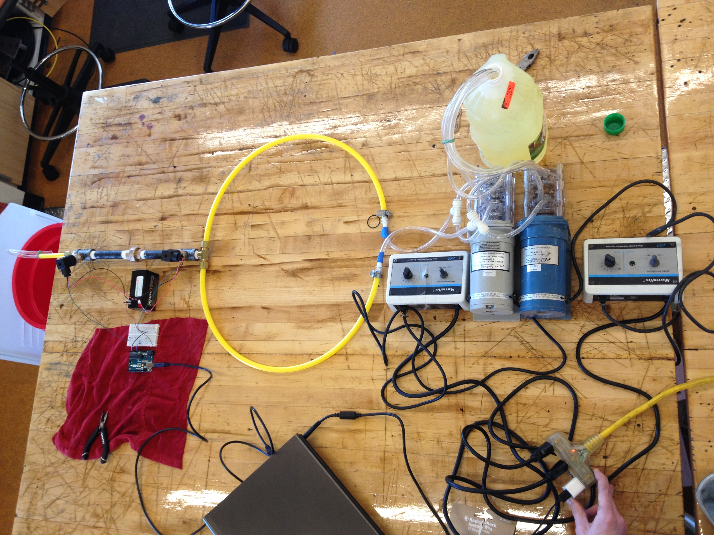
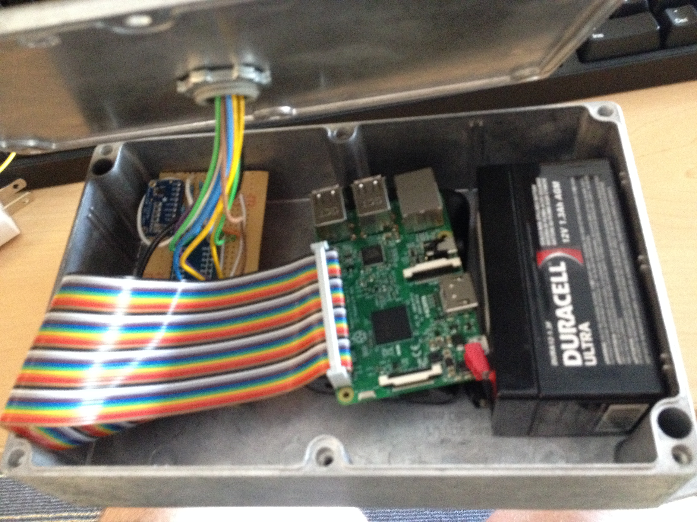

<section>
<center>
<h4>Bending the Outer Hull</h4>

<p> <br> <br> <br> ProfWave team members Aaron, Joe, and Ed work on bending the hull into the appropriate shape</p>

<h4>Sealed</h4>
  
<p> <br> <br> <br> <br> <br> </p>
  
<p> <br> <br> <br>A view of the inside and outside of the bottum hull of ProfWave after welding and sealing any holes with Flex Seal</p>

<h4>Calibrating the Orifice</h4>

<p> <br>  Setup used for the calibration of the orifice plate</p>

<h4>DAQ Box Layout</h4>

<p> <br>  Layout used for the inside of the DAQ Box</p>
</center>
</section>
